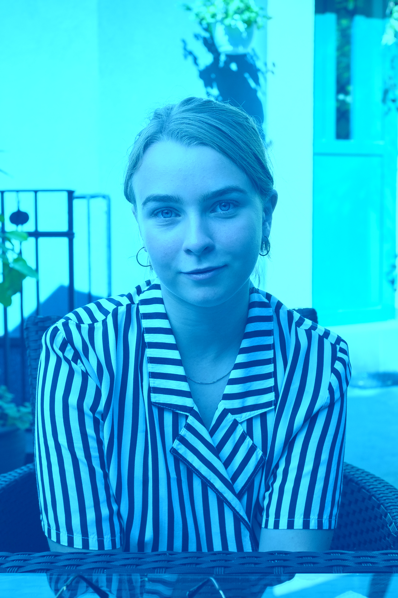
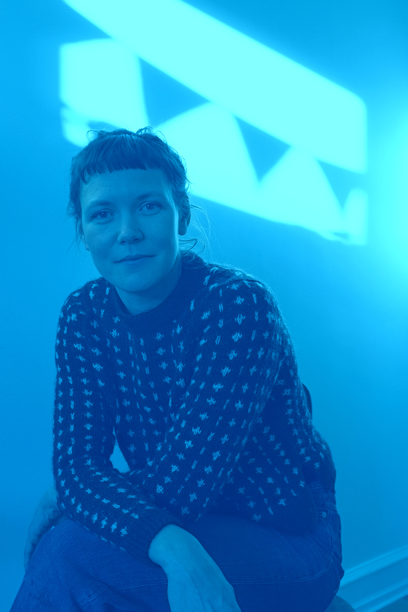
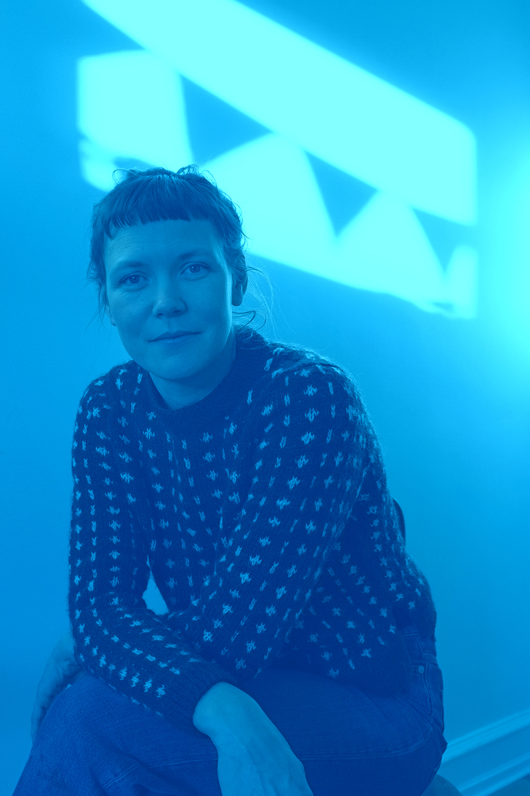
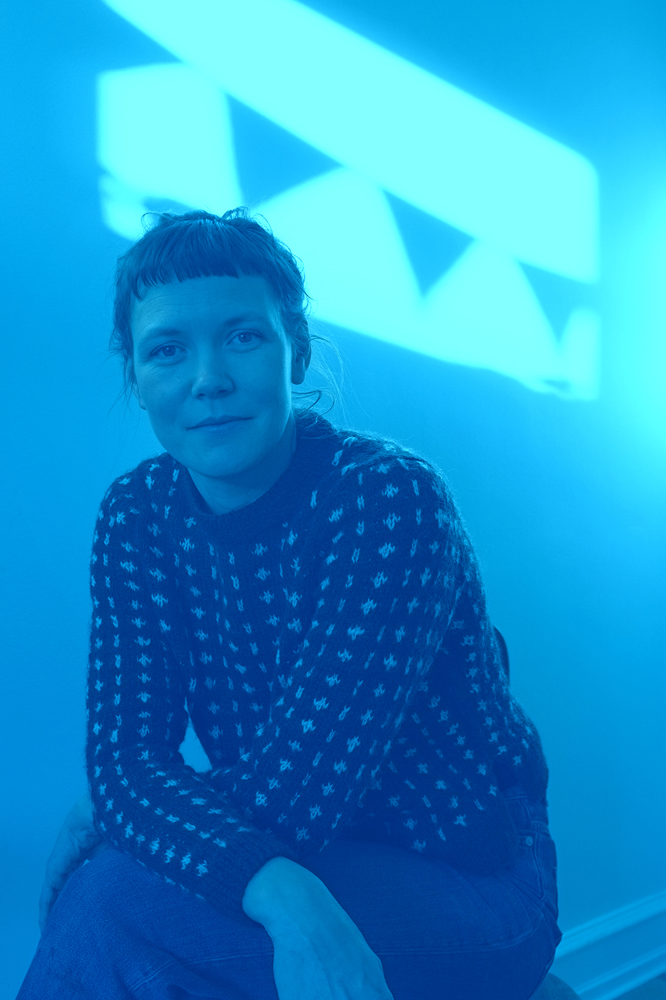

Om os

 



En passion for kunstværker
Vi er en gruppe studerende fra KEA, der læser multimediedesign. Til sammen udgør vi et team, der deler en fælles passion for kunst og lysværker.
Vi er betaget af det kunsterrige ved lysets farver og niveauer, hvorfor vi har valgt at lave en hjemmeside, der tager udgangspunkt i Copenhagen Lysfestival.
Copenhagen light festival er med til at lyse hverdagen op i en tid, hvor corona hærger tungt over Danmark. Derfor finder vi det interessant at lysinstallationer kan skabe glæde og positivitet i en ellers mørk vinter.